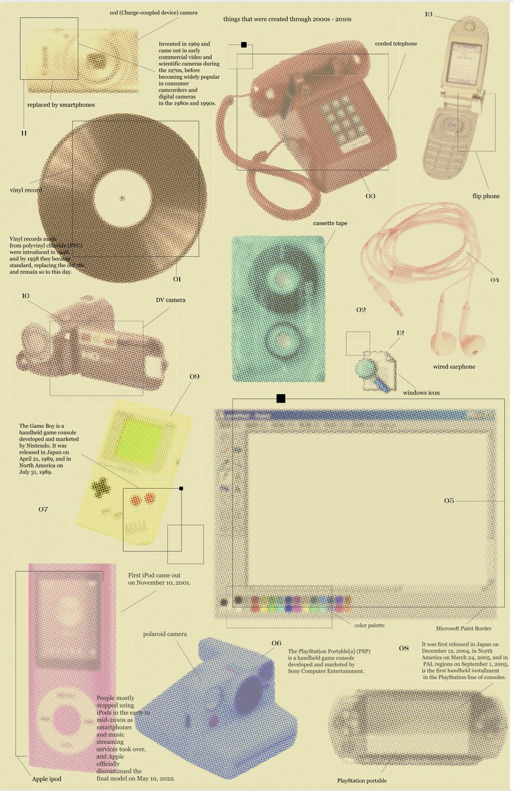
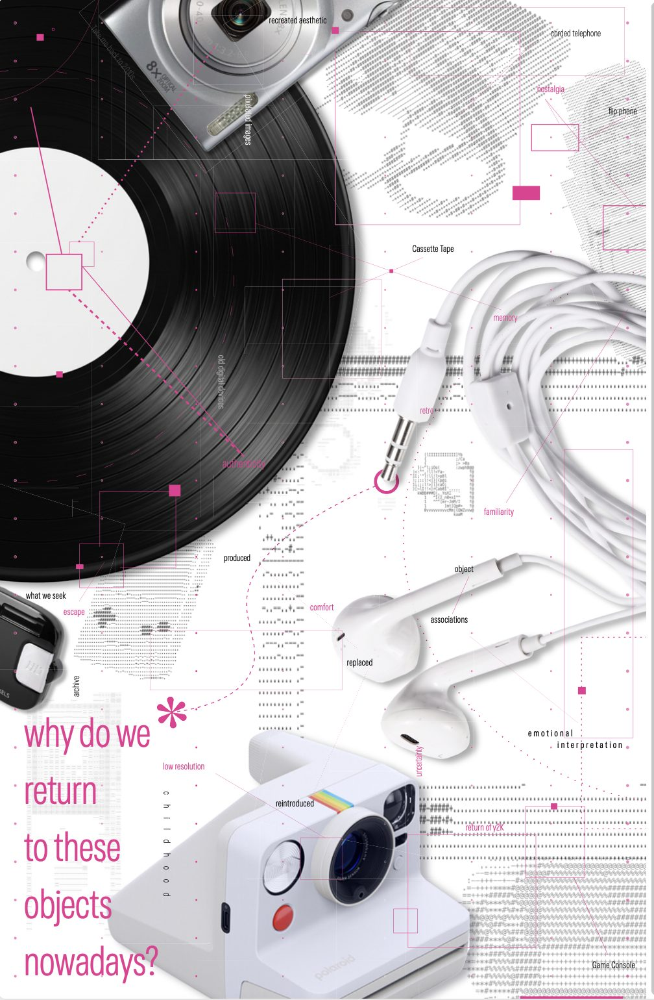

About this Collection...


The Comfort of Looking Back is a digital catalogue exploring the revival of outdated technologies and visual trends from the 2000s and 2010s through contemporary nostalgia.
The collection features objects such as CCD cameras, DV camcorders, wired earphones, MP3 players, early digital interfaces, and low-resolution imagery. Once considered ordinary or obsolete, these objects are now being rediscovered and reinterpreted by a new generation.
Rather than presenting them as isolated artifacts, this catalogue explores the connections between their original uses, visual characteristics, and emotional associations. Through an interconnected, non-linear browsing experience, users can navigate between objects and discover unexpected relationships shaped by shared memories, aesthetics, and cultural meanings.
By examining how the meaning of everyday objects changes over time, the project asks: Why do we return to things from the past, and what makes something outdated feel meaningful again?